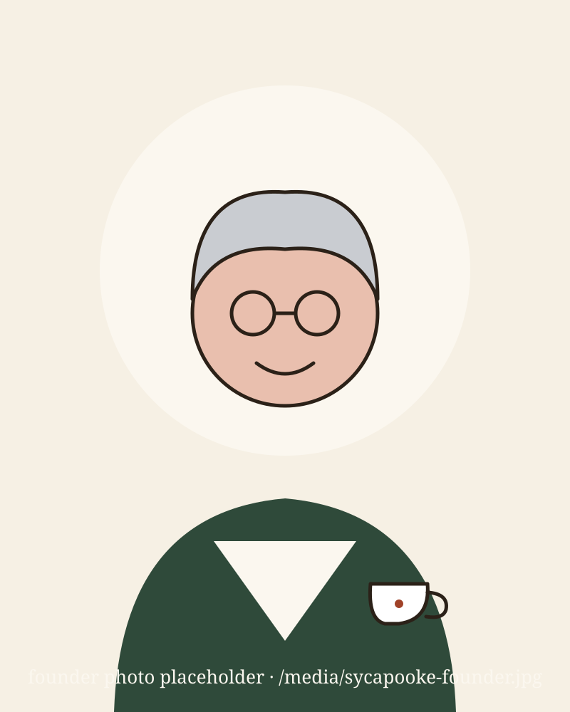

“It’s the made-up word I whispered to my son when he was a baby. When it came time to clear out our family home, I realized every teacup and brooch deserved that same word — and someone who’d see it too.”
Founder, age 70, grandmother of five
